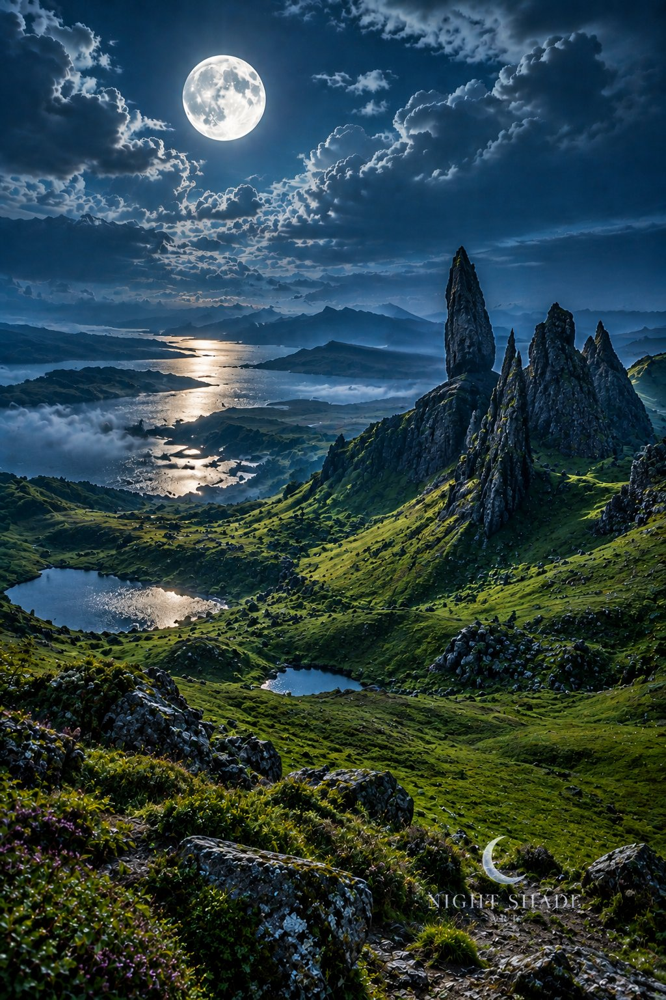

Night Windows · 50
Isle of Skye Storr Moon
The Old Man of Storr stands over green Skye slopes while lochans and the sea loch catch silver light under a full Highland moon.
Want a poster? Buy at the link. Poster and framed sizes ship via print-on-demand after checkout.
Browse the full Night Windows series · Night Shade Art on Instagram: @moonnightshadeart